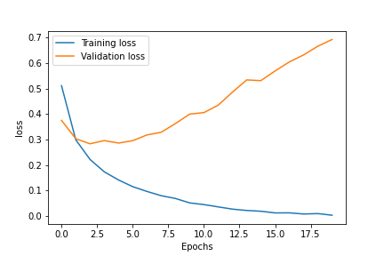

Qu'est ce que l'overfitting ?
On parle ici d'apprentissage supervisé: il y a: les données d'apprentissage, qui servent à ton réseau à apprendre les données de validation, qui servent à valider ce qu'a appris de ton réseau au fur et à mesure de son apprentissage. * les données de test, qui servent à connaître l'efficacité de ton réseau, une fois l'apprentissage terminé.
Ce qui est important ici, c'est que ton réseau, durant son apprentissage, ne doit jamais avoir rencontré les données de test, ni les données de validation.
Si je prend l'exemple d'une classification binaire d'un texte, tu peux apprendre à ton réseau de faire la différence entre un commentaire positif et un commentaire négatif.
On peut faire cet exercice, par exemple, avec le dataset imdb accessible avec keras
keras.datasets.imdb.load_data(num_words=10000)
Je construis le modèle suivant :
Model: "sequential_1"
_________________________________________________________________
Layer (type) Output Shape Param #
=================================================================
dense_3 (Dense) (None, 16) 160016
_________________________________________________________________
dense_4 (Dense) (None, 16) 272
_________________________________________________________________
dense_5 (Dense) (None, 1) 17
=================================================================
Total params: 160,305
Trainable params: 160,305
Non-trainable params: 0
_________________________________________________________________
Je prépare les données d'entrée en construisant des séquences, dont je reparlerais une prochaine fois.
Une fois l'entrainement réalisé, je construis les deux courbes suivants, pour le loss et l'accuracy :


On remarque que :
- avec les données d'apprentissage (en bleu), le réseau sait différencier de mieux en mieux les commentaires : l'erreur est de plus en plus faible (loss), et la pertinence est de plus en plus grande (accuracy).
- avec les données de validation : après quelques epochs seulement, l'erreur commence à augmenter. La pertinence stagne quasiment de le départ, voire diminue au fur et à mesure de l'apprentissage.
Que c'est-il passé ?
Le réseau a appris un peu trop bien à différencier les commentaires qu'il a vu pendant l’entraînement.
Mais il est incapable de généraliser.
C'est le principe de l'overfitting.
A toi de jouer
N'oublie pas de t'inscrire par email pour ne pas rater les prochains épisodes.